Railroad Stations in Niles, Ohio

Old Erie RR Depot.
{kind=link}
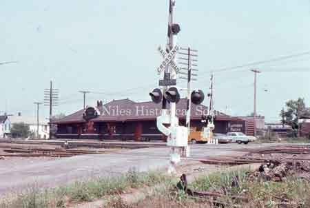
Erie Rail Road passenger station was near Langley Street and the Niles Firebrick factory.

The Erie Depot has been boarded up prior to its demolition n 1981.

VS

Architect Drawings of New Erie Railroad Station on Mahoning Avenue.

Niles soldiers going to the service. 1918…This photo was taken at the old Erie Train Station

A small part of the crowd at the Erie Railroad train station when the Niles boys left for Chillicothe, Ohio for WWI.
{kind=link}
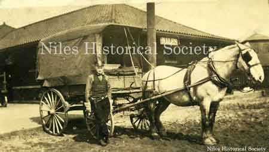
The American Railway Express.

Steam locomotive and tender of the Erie Rail Road as it crosses over County Line Road in Mineral Ridge.
{kind=link}
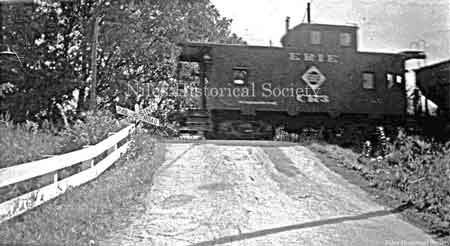
Erie Rail Road caboose as it crosses over County Line Road in Mineral Ridge.
{kind=link}
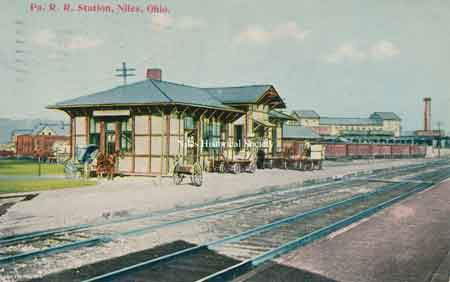
An early view of the Pennsylvania Railroad passenger station, which was located on South Main Street near the Mahoning River.
{kind=link}
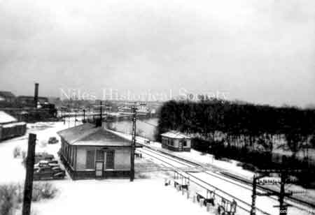
Penn station in the snow, located on the east side of the viaduct with the Mahoning River on the right side.

1978 view of the Pennsylvania Railroad passenger station.
{kind=link}
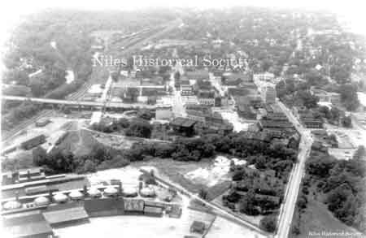
An aerial view of the Niles Firebrick kilns looking west with the Mahoning River and Pennsylvania Railroad stations and yard on the left side.

Pennsylvania Station and railyards on South Main Street with the Mahoning River on the right and Niles Firebrick in background center.
{kind=link}
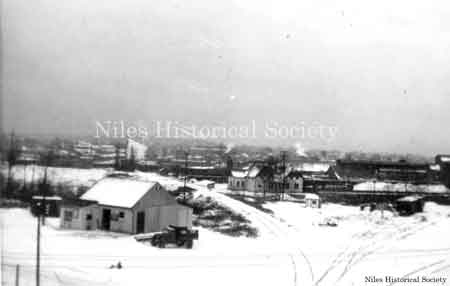
The Pennsylvania Railroad yard.

Pennsylvania Railroad Station, 1974.

View showing the PRR crossing at South Main Street and Water Street.
{kind=link}
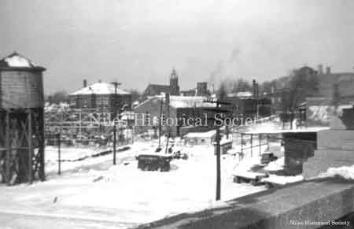
Photograph taken from the viaduct looking to the west. Seen are St. Stephen Church and the Nun's home, and St. Stephen school.
{kind=link}
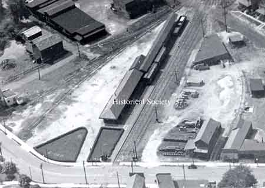
The B&O railroad was located on the north side of Church Street. It ran through Niles as early as 1874. It later expanded taking in the Ashtabula & Pittsburgh line and the Painesville & Youngstown line
{kind=link}
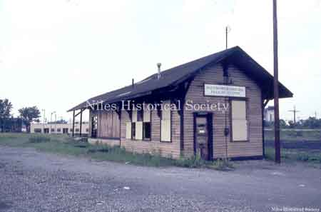
B&O Freight Station in 1966.
{kind=link}
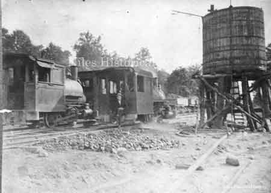
The new B&O railroad at Crow Orchard about 1902. The RR was constructed in 1902 and its landfill covered the historic Salt Springs which attracted early settlers to the valley.

Waiting at the RR station for the train.
{kind=link}
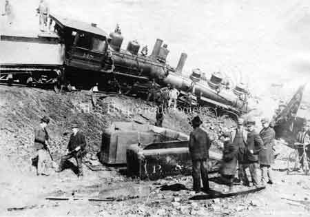
Someone got their signals mixed and the result must have been an ear-splitting crash as these two behemoths met head on near Niles.
{kind=link}
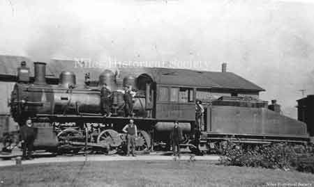
Old Pennsylvania steam locomotive No. 9005.
{kind=link}
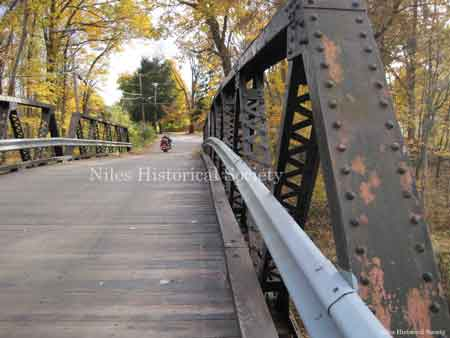
The Fifth Avenue Iron Bridge with its wooden roadway provided access over the Pennsylvania Railroad tracks that followed the Mahoning River.
{kind=link}
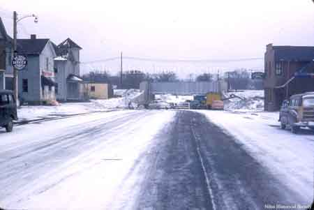
In 1953 the North Main Street Underpass project was completed.
{kind=link}
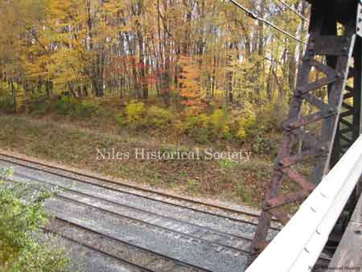
In 2011 the piers supporting the Iron bridge were damaged by a train and a new replacement bridge was constructed over the railroad tracks.

Postcard view of Pennsylvania Railroad

Pennsylvania Railroad tracks and crossing along the Mahoning River, 2012.

Pennsylvannia Railroad engine# 7882.
{kind=link}
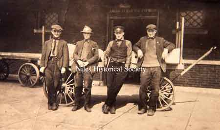
Railway Express employees.

PRR passenger and freight station.

Location of B&O Yard on 1918 map.

Location of Erie station on 1918 map.